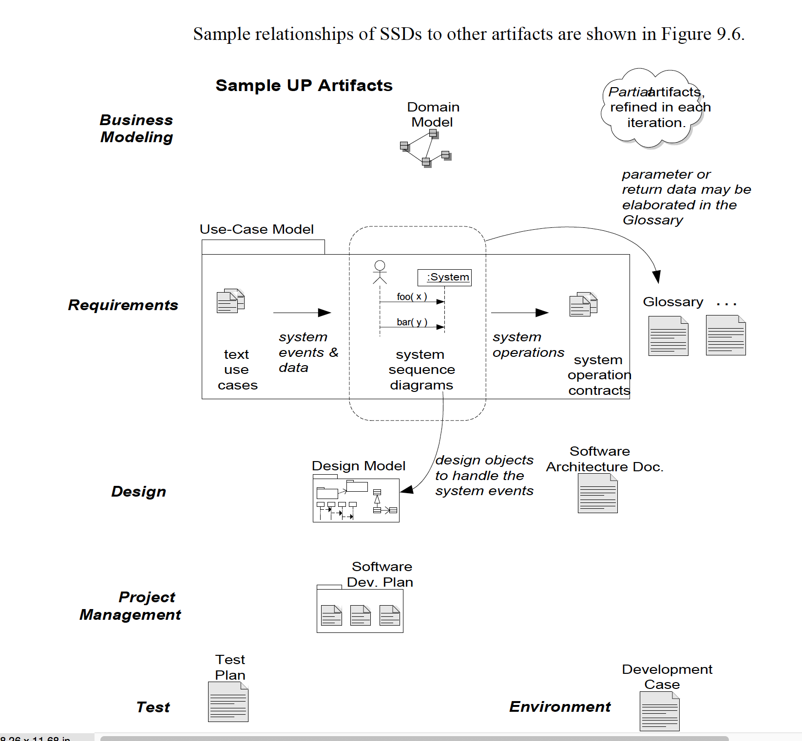

Casus: Red-cars
OSM - Modelling
Jorn Brouwer & Wouter Meijer
Aan..
Wij hebben ervoor gekozen om de do
Toelichting op gemaakte keuzes:
Toelichting op de manier hoe wij de op-te-leveren producten, hebben gerealiseerd:
-
Het SRS en SDD bevatten zowel elementen uit iteratie 1 als uit iteratie 2. Dit is een bewuste keuze omdat de gevraagde documenten per iteratie, beschreven in de aangereikte casus, ook niet zo te verdelen zijn.
-
We zijn op een aantal punten niet slaafs ingegaan op de gevraagde omschreven opdracht. Maar hebben de afgeweken punten beschreven in:
LINK -
In de toelichting van het:
